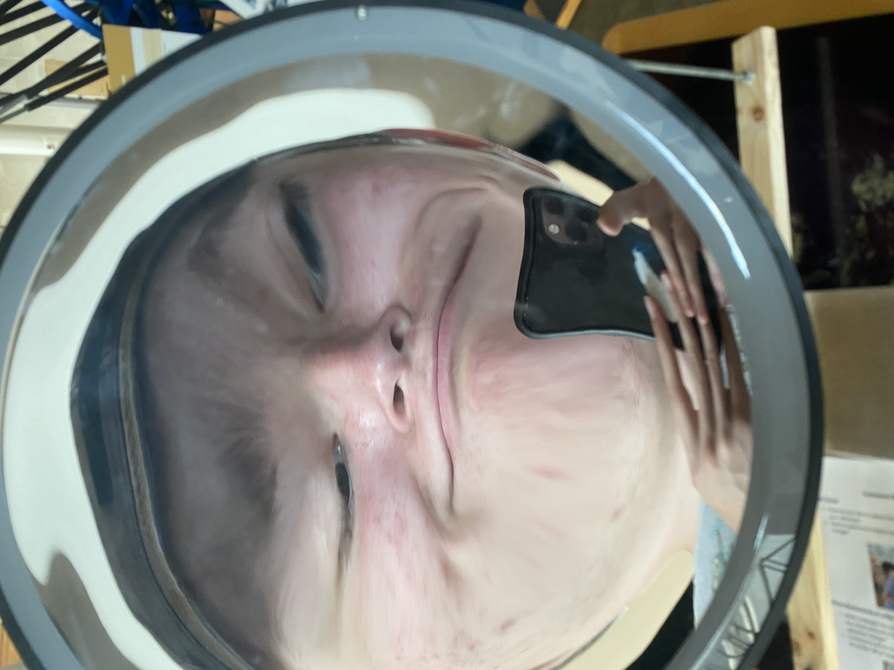

Welcome to My Personal Website
Hi, I'm James Collette. This is my personal website where you can learn more about me and get in touch.
About Me
I am a web developer with a passion for creating beautiful and functional websites. I have experience in HTML, CSS, and JavaScript. I am also able to pick things up rather quickly and a fast learner.
Work Experience
Over the course of my albeit short career I have worked on various projects and have worked in a variety of places.
- Early stages: My first ever job was at Edge-works Climbing and Guiding as a youth instructor. After working there for two years that job taught me the skills to handle and work with people and in a dynamic ever changing office space. In my time working there I have added much to the curriculum and was promoted multiple times due to my talents as an educator and coach. Which is propelled by my outgoing personality and kind heart.
- Project 2: A personal blog built with HTML and CSS.
- Project 3: A Unity Engine game that I developed for fun.
Contact Me
If you would like to get in touch, please visit the Contact Me page.